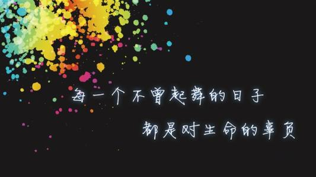
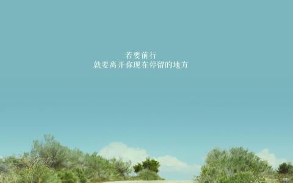
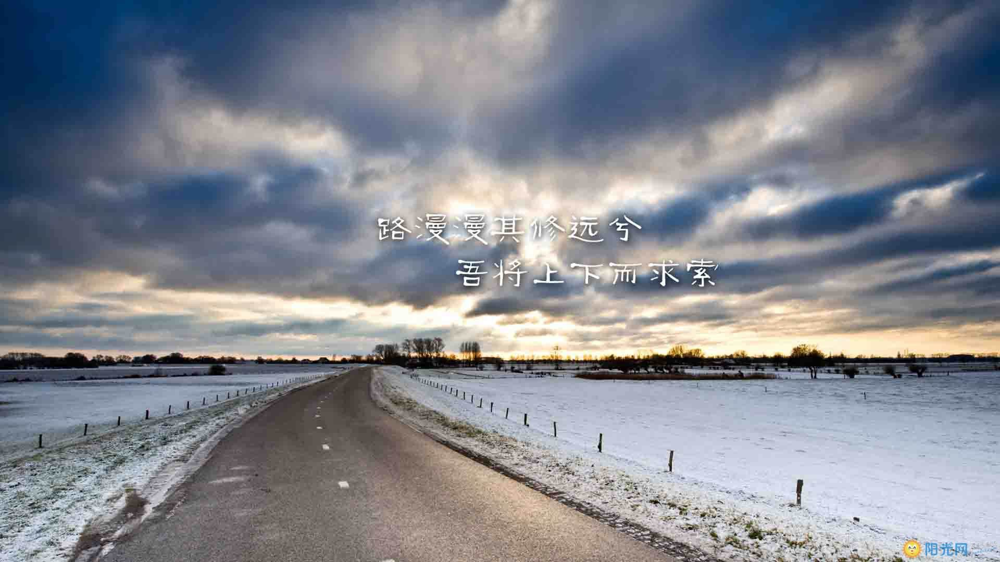

1.人在一生之中，总有些酸楚的往事，让人泪流满面，令你不堪回首；也总有一些甜蜜的回忆，让人沉醉不醒，痴迷而又流连忘返。而一些生死离别的无奈，相聚重逢的喜悦，放弃与执着，忧愁和快乐，心痛过的，感动中的，都宛如一首跌宕起伏的人生交响乐。既有千回百转的悱侧惆怅，又有情深意意的悠悠旋律，不时的在你心中回荡。徘徊。萦绕。在那往昔的经历中，纵有秀山丽水，旖旎梦境，纵是花前月下，呢喃细语的缠绵回忆，终抵不过此时百感交集的一声轻叹，一脸无奈，一缕清怨
2.曾经的青春很短暂，也很无情，自以为迈开了脚步，就可以浪迹天涯，向着前方自由的奔跑，可是在万般阻扰的挫折上，只能用着胆怯的目光看着“层层浪，叠叠高”的物质文明社会，不敢融入进去，可是逃避了现实的约束，就能高枕无忧了么？一昧的消沉，失落，伪装出虚伪的自己，可最后受伤的人还是自己。
3.每一天的早晨我们还是需要坚强，即使在睁眼的刹那，心底一百个不情愿的挣扎着起床，可是我们还是得用飞一般的速度解决洗脸刷牙，过着打仗般节奏的生活状态。在连续没有休息的时候，拖着疲惫的身躯，眼皮在打架，慵懒的精神在无声的抗议，我只是一具行走的躯壳。而一旦，获得充足的休息，让身体和心灵得到阳光和雨露的滋养，年轻的心又迅速的恢复弹性，一扫消极的情绪，再次投入到风风火火的生活中。
4.再不会为了一句话，而和人争得面红耳赤；再不会为了一个漫不经心的承诺，而欲生欲死。抑或流年里少了那些朗声大笑，取而代之的却是温婉的微笑。坐在电脑前，静静地听一首歌或看一篇文，常常是被一个旋律、一句话或一幅图所感动，而在不期而至的灵感中，任指下敲出袅娜的花。岁月荏苒，什么都可以改变，唯一不能改变的是天性中的善良和善感。
